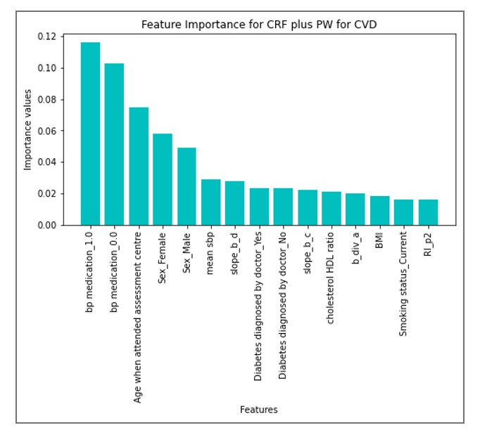
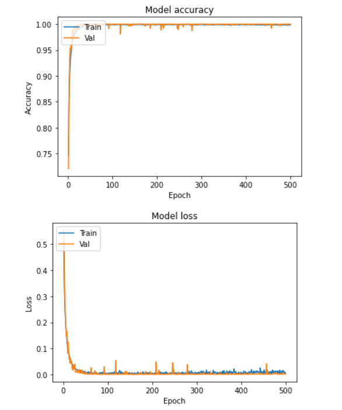
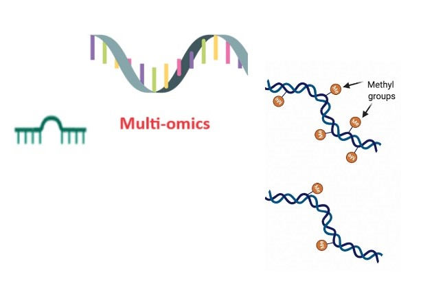
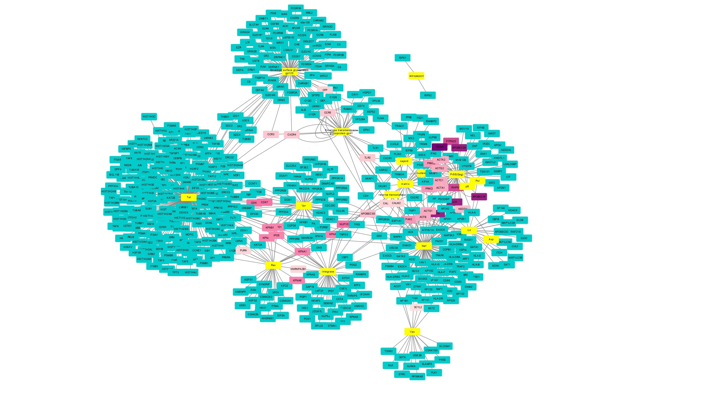
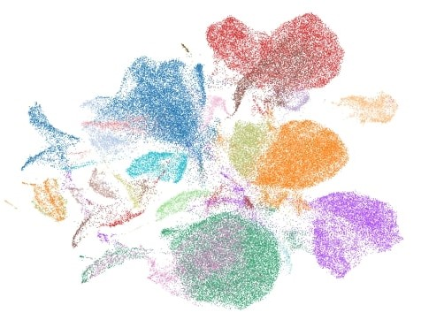
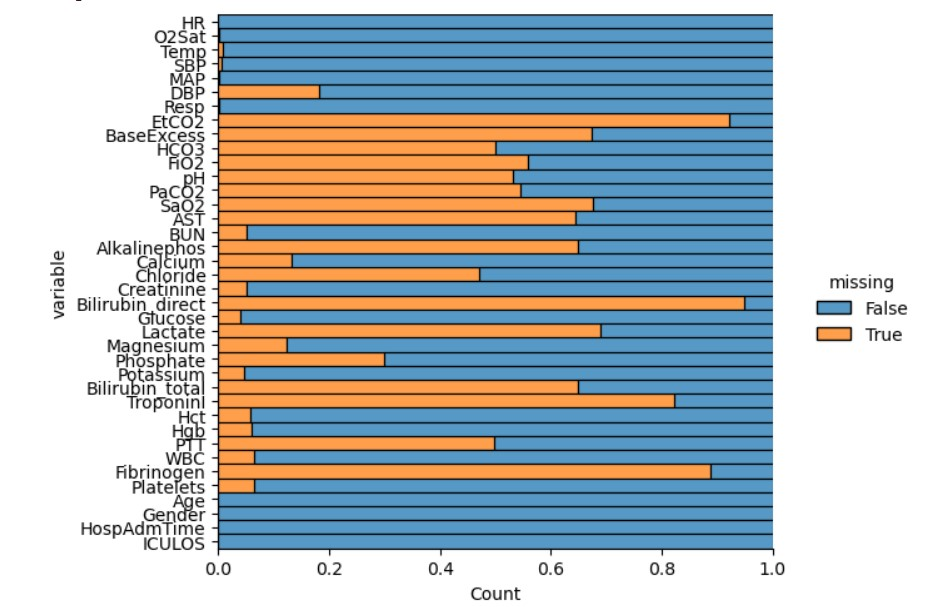
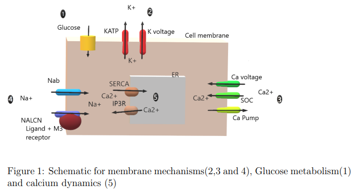

ABOUT ME
I work at the intersection of AI, machine learning, and computational biology, developing intelligent systems to accelerate biological discovery.
JOURNEY
I began my academic journey with a Bachelor's degree in Microbiology which laid the foundation for understanding biological systems. I then pursued a Master's degree in Bioinformatics where I developed an interdisciplinary foundation spanning biology, bioinformatics, mathematical modelling and computer science. To strengthen my quantitative and AI expertise, I pursued a second Master's degree in Applied Statistical Modelling and Health Informatics at King's College London. This program deepened my understanding of machine learning, artificial intelligence, statistical modelling, and data-driven approaches to solving complex biomedical problems, shaping my research interests at the intersection of AI and biology.
Since then, I have worked across research institutes, startups, and applied AI research, developing AI-driven solutions to real-world scientific challenges. Today, as an Associate Machine Learning Scientist – Computational Biology at ARTPARK, IISc,
I develop AI-driven approaches for disease surveillance, evolutionary modelling, and scientific discovery.
PROJECTS
Let's dive into my exciting work

Influenza A virus (IAV) poses a persistent global threat due to its ability to evolve rapidly through reassortment. This project presents a computational framework that inte- grates DNABERT-2, a transformer-based foundation model for genomic sequences, with machine learning and genetic algorithms to predict reassortment events.

Backed by robust data from 100K+ participants from the UK Biobank, this research unveils the transformative potential of pulse wave analysis and classical risk factors in forecasting both cardiovascular disease and cardiovascular disease death risks. Leveraging state-of-the-art machine learning techniques, the study aims to predict the risk of cardiovascular diseases, empowering the individual to take proactive steps towards effective treatment options.

Aim of this study is to classify the presence of cold and flu in speech samples using baseline models and deep learning. The study also delves into a comparative analysis of these models used for classification.

Development of a machine learning model for cancer classification using multi-omics data (mRNA, miRNA and methylation data). The project focused on creating a model to differentiate between cancerous and non-cancerous tissue samples, aiding clinicians during surgery for effective removal.

Enhancement of host pathogen protein - protein interaction network using recommender systems (probabilistic spreading algorithm) and machine learning. This novel method designed using Human (host) and HIV (pathogen) bipartite network data from NCBI as an example, can be utilized to find potential drug targets and explore disease biology.
Bioinformatics pipelines (variant calling), showcasing difference between various sequencing technologies like Illumina and Oxford Nnaopore technologies (ONT).

Preliminary analysis on single cell data (lung) obtained from single cell portal to understand clustering and different cell types.

Aim of this project was to develop a machine learning model to predict sepsis diagnosis using vital signs, laboratory tests and demographic variables. Sepsis is body’s response to an infection which leads to tissue damage. If sepsis is detected well in advance, it can save many lives. This project explores the prediction of Sepsis using ML classifier based on physiological data.

Implemented the published model of Pancreatic Beta Cell G - Protein Coupled Receptors and Second Messenger Interactions: A Systems Biology Computational Analysis on MATLAB. We developed a mathematical model of the insulin secreting pancreatic beta cell environment which includes membrane mechanisms, G protein coupled receptor mechanisms, cAMP and PLC pathway and cytosolic and endoplasmic reticulum calcium dynamics The model was based on ordinary differential equations with nonlinear terms which were numerically integrated by Eulers method.